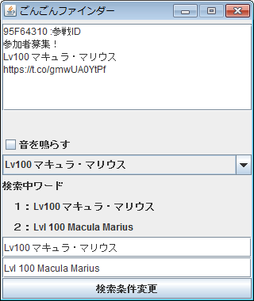

グラブルのツイッター救援を自動検索し、参戦IDを自動でコピーしてくれるツール

ダウンロード
初期設定
GonGonGonFinder.jarを起動すると、ツイッター認証を求められるので認証してください。
1度認証すればその後認証する必要はありません。
ツールの説明
1.検索にヒットしたツイートの参戦IDを自動でクリップボードのコピーしてくれます。
2.検索ワードを変更する場合は、
プルダウンを選択したあと「検索条件変更」をクリックしてください。
3.テキストエリアに任意のワードを入力し
「検索条件変更」をクリックすることで任意のワードでも検索できます。
4.起動と終了を繰り返したりするとTwitterAPI規制にかかり検索結果が出なくなる可能性があります。
その場合は、しばらくたってから起動しなおしてください。
カスタマイズ機能
1.検索条件のカスタマイズ
raidList.txtはプルダウンに表示させたいものを記入するテキストファイルになります。
ここに追加すれば追加した分がプルダウンに表示されます。
また、一番最初の行に記入されているものが初期の検索条件となります。
2.音声通知
クリップボードが更新された際に音を鳴らすことができます。
また、鳴らしたい音声ファイルがある場合はwav形式であれば
sound.wavにリネームし、差し替えることで任意の音声ファイルを再生することができます。
よくある質問
1.ダブルクリックで実行できない。
Javaのバージョンが古い可能性があります。下記のURLからJavaをダウンロードして最新にしてください。
https://java.com/ja/download/
2.実行すると「WindowsによってPCが保護されました」とでる。
詳細情報をクリックすると実行ボタンが表示されるので、そこから実行してください。
戻る